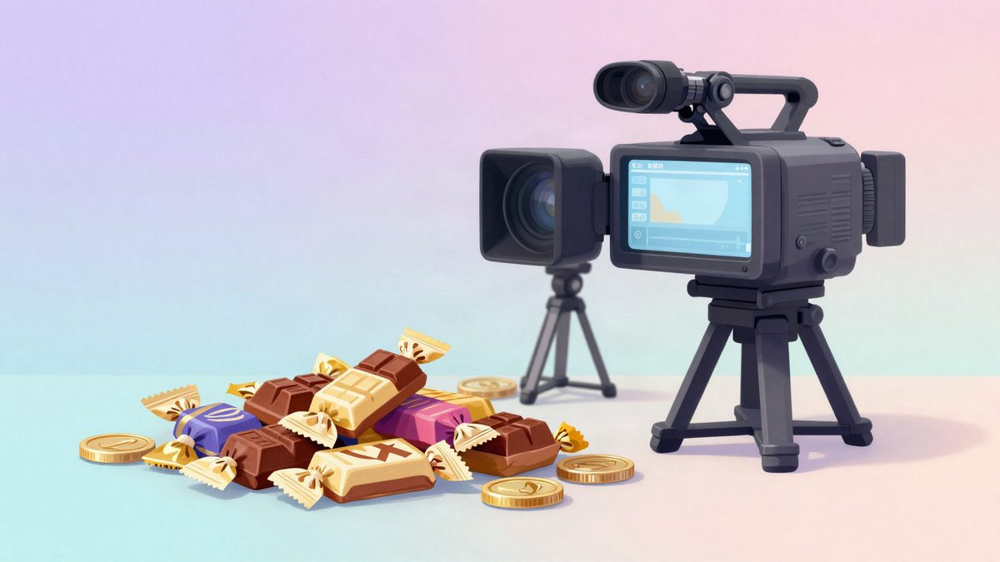

MrBeast na videima gubi oko 72 milijuna eura, a zarađuje na čokoladi Feastables

Prema dokumentima za investitore, MrBeastov medijski dio imao je 2024. prihod od oko 225 milijuna eura i gubitak od gotovo 72 milijuna eura. Čokoladni brend Feastables u istoj je godini ostvario dobit veću od 18 milijuna eura, a za 2025. navodi se prodaja od oko 470 milijuna eura i dobit od gotovo 47 milijuna eura.
MrBeast (Jimmy Donaldson), najpraćeniji YouTuber na svijetu s oko 800 milijuna pratitelja, na videima ne zarađuje, nego gubi. Prema podacima iz dokumenata investitora, njegov medijski dio je 2024. imao prihod od oko 225 milijuna eura, ali i gubitak od gotovo 72 milijuna eura. Cijelo carstvo drži čokoladni brend Feastables.
Video format koji ga je proslavio je skup. Veliki novčani darovi, izazovi u stvarnim okruženjima i humanitarni sadržaj stoje i po nekoliko milijuna dolara po videu, a prihodi od oglasa i podjele zarade s platformom to ne pokrivaju. Videi tako služe kao reklama bez ograničenja troška: donose publiku i naklonost gledatelja, a dio te publike prelazi na Feastables, brend koji je pokrenuo 2022.
Čokolada kao glavni izvor zarade
Feastables je od početka preuzeo mehaniku iz njegovih videa. U pojedine čokoladice stavljena je "zlatna karta", a oni koji je pronađu ulaze u natjecanje za visoke nagrade. To se uklapa u priču o izazovima koju gledatelji već poznaju.
Proizvod se danas prodaje u više od 30.000 trgovina diljem svijeta, među ostalima u lancima Walmart, Target i 7-Eleven. Prema tim podacima, Feastables je 2024. ostvario prodaju od oko 225 milijuna eura i dobit veću od 18 milijuna eura, što je znatno više od profitabilnosti video poslovanja.
U 2025. rast se ubrzao. Prodaja je porasla na oko 470 milijuna eura, a dobit na gotovo 47 milijuna eura, više nego dvostruko u odnosu na godinu prije. Zbog šire distribucije i novih proizvoda brend više ne ovisi samo o MrBeastovim obožavateljima, nego ga kupuju i uobičajeni kupci u supermarketima.
Planovi za 2026.
Prema internim projekcijama, Feastables bi 2026. mogao dosegnuti prihod od oko 675 milijuna eura, uz ciljanu dobit od oko 270 milijuna eura. Riječ je o planu, a ne o ostvarenim brojkama.
MrBeast se u hrani ne ograničava na čokoladu. Pokrenuo je i virtualni lanac MrBeast Burger te proizvod Lunchly, gotove obroke za brzu konzumaciju. Cilj mu je jeftina roba široke potrošnje, a tu je, prema ovim podacima, i njegov stvarni izvor prihoda.
Izvor: MyDrivers (快科技)
Povezani članci
 GTA 6 navodno ima 6,08 milijuna digitalnih predbilježbi i oko 598 milijuna dolara prihoda20. listopada 2026.
GTA 6 navodno ima 6,08 milijuna digitalnih predbilježbi i oko 598 milijuna dolara prihoda20. listopada 2026. U SAD-u je nestao kamion sa šest paleta Nvidia GPU-a vrijednih 11,4 milijuna dolara6. studenoga 2026.
U SAD-u je nestao kamion sa šest paleta Nvidia GPU-a vrijednih 11,4 milijuna dolara6. studenoga 2026.- TikTok pod optužbom da je zarađivao na videima dječjeg seksualnog iskorištavanja21. listopada 2026.